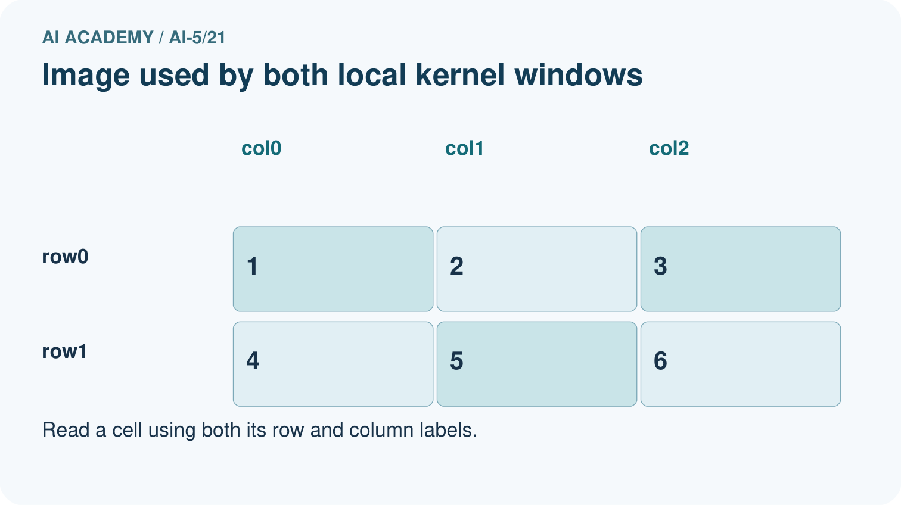
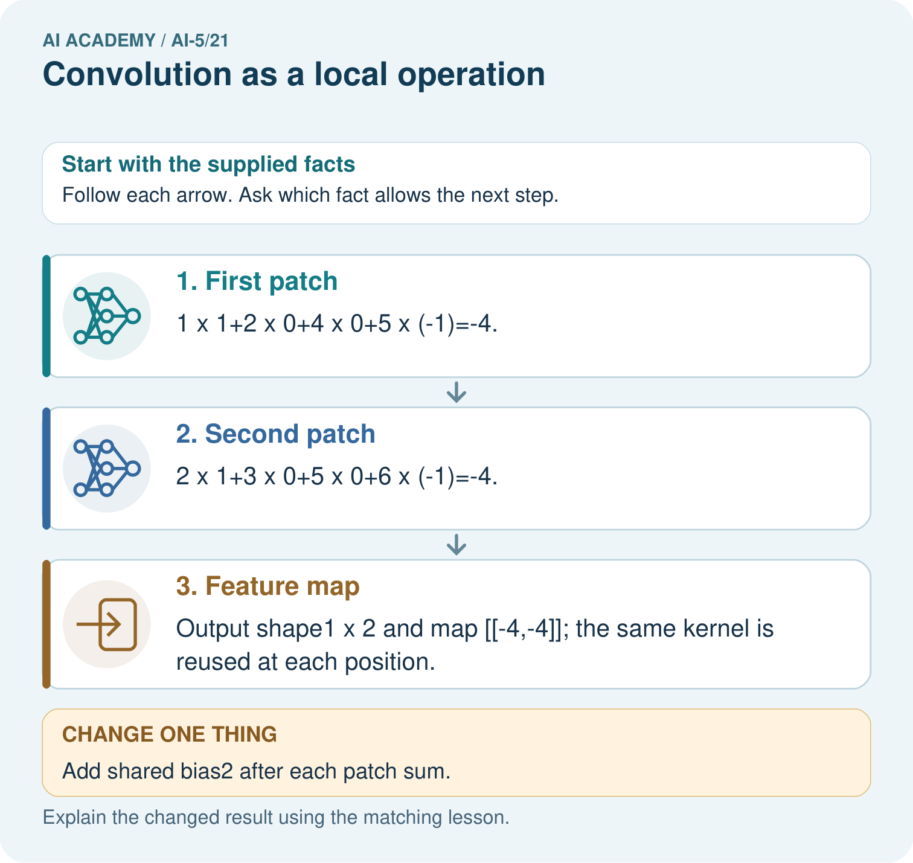

AI Academy · Level 5 · Grade 10 · Week 21 · Teacher guide
Convolution as a local operation
Learn to understand, design, build, test and explain AI systems responsibly.
Project: Image-pattern Network Investigation
Teacher guide · 1 of 8
Prepare the purpose, prerequisites and materials
Teach the learning cycle
Primary target: Compute a local weighted sum at each valid image position
| Session | Sequence and minutes | Resources |
|---|---|---|
| Session 1 · Understand · 45 min | 0–7: recall and prerequisite; 7–15: inspect the concrete case and predict; 15–30: teacher models the worked trace; 30–40: learners explain a step using the text and visual; 40–45: check the core idea. | Sections 1–6; record the brief recall in the workbook. |
| Session 2 · Practise · 45 min | 0–5: retrieve the procedure; 5–15: W2 completion practice; 15–23: explain and check with a partner; 23–30: each learner answers the misconception check; 30–40: targeted reteaching or a harder variation; 40–45: prepare the investigation. | Sections 7–10; use the matching workbook W2 and misconception check. |
| Session 3 · Investigate and transfer · 45 min | 0–5: retrieve the decision rule; 5–20: investigate or trace; 20–30: start the independent case; 30–38: connect the project; 38–43: act on feedback; 43–45: plan the return check. | Sections 9 and 11–14. Give extra time to finish the full task set; use Section 15 when the week includes a coding lab. |
This is a starting allocation of 135 minutes, not a validated duration. Preserve all named topics. Schedule extra time for connected examples, the full investigation, independent cases and project building. Repeated copies of a case share one recorded attempt; they are not new evidence.
Retrieval answer guidance
Image tensors and channels
Without opening the old lesson, explain one key idea from Image tensors and channels. Give an example and a mistake that the idea helps you avoid.
Look for: Read a pixel using declared row column and channel axes
Reference example, not the only acceptable wording: Teacher explanation: The RGB pixel is [0, 0, 255]; its blue value is 255. Shape is 2 by 2 by 3, with four pixels and twelve channel values.
Debugging shapes and gradients
Without opening the old lesson, explain one key idea from Debugging shapes and gradients. Give an example and a mistake that the idea helps you avoid.
Look for: Check dimension contracts before computing a layer
Reference example, not the only acceptable wording: Teacher explanation: No. Each weight row must have the same length as x. Confirm the intended feature schema, then supply a valid two-feature input or deliberately redesign and retrain the layer; do not silently discard a value.
Training and validation curves
Without opening the old lesson, explain one key idea from Training and validation curves. Give an example and a mistake that the idea helps you avoid.
Look for: Compute comparable training and validation losses at saved checkpoints
Reference example, not the only acceptable wording: Teacher explanation: Predictions [3, 4], residuals [-1.5, -2], squares [2.25, 4], MSE 3.125.
Use two 45-minute sessions. Prepare a 2 by 2 paper window and a labelled 3 by 3 grid. Keep kernel orientation fixed and distinguish raw sums, bias and ReLU. Explain that neural-network convolution commonly uses cross-correlation; the exercise explicitly declares this convention. Technical reference: https://docs.pytorch.org/docs/stable/generated/torch.nn.modules.conv.Conv2d.html . No library installation is needed.
Outcomes
Compute a local weighted sum at each valid image position
Explain shared weights and predict output dimensions
Check how stride boundaries and activation affect the result
Preparation
Printed lesson and workbook; paper and pencil
Calculator and optional local Python 3 editor; no packages or AI accounts needed
Use the fictional examples supplied; prepare the fresh retry before class
Prerequisite answer
The same dimensions can describe different coordinate meanings. A correct computation must know which axis is row, column or channel.
End goal for the pictorial case
By the end, I can explain convolution as a local operation using a traced example and a stated limitation.
This added worked case illustrates the week’s main idea. Retain all original and connected topics; schedule its practice within the teaching cycle.
Teacher guide · 2 of 8
Explain and model the mechanism
Use a fictional single-channel image with rows [1, 2, 0], [0, 1, 3] and [2, 0, 1]. Coordinates are zero-based row then column. Our kernel has rows [1, -1] and [0, 1]. At each position, multiply matching entries of a 2 by 2 window and the kernel, then add the four products. Use bias 0, stride 1 and no padding.
At the top-left window, the sum is 1 times 1 plus 2 times -1 plus 0 times 0 plus 1 times 1 = 0. Slide the same kernel right, then down. Only use windows that fit entirely inside the image; this is the valid boundary rule.
The feature map has rows [0, 5] and [-1, -1]. This neural-network convention keeps the kernel orientation fixed; mathematically it is cross-correlation. Mathematical convolution reverses the kernel along both spatial axes. We use the fixed-orientation convention throughout, so every hand calculation and program agrees.
The following function assumes nonempty rectangular numeric arrays and a positive integer stride. It rejects a kernel larger than the image. It computes one input channel, one output map, zero bias and no padding; no activation is applied inside the function.
The kernel weights are reused at all four positions. There are four kernel parameters, not sixteen separate weights. If we add one shared bias for this output map, there are five parameters. The number of multiply operations grows with the number of windows even though the parameter count stays fixed.
| Term | Meaning |
|---|---|
| Kernel | A small array of weights applied to a local input neighbourhood |
| Feature map | The spatial array of outputs produced by applying a filter |
| Stride | The distance between successive window starting positions |
| Padding | Values added around an input boundary under a declared rule |
One shared kernel produces four local sums
Guided: only the window starting [0, 0] includes input[0][0]. Its weight is 1, so adding 3 changes that output from 0 to 3. The map becomes [[3, 5], [-1, -1]]. Exit: the declared unpadded stride-1 setup gives 2 by 2, not 3 by 3. A different padding or kernel setup would need documentation. Values are local weighted sums, not probabilities.
Model the reasoning aloud
Use the complete worked example below before asking learners to complete W2. Reveal a small part, invite a prediction, then explain the deciding step. These teacher notes contain solutions; do not reveal the independent case answer during modelling.
One shared kernel produces four local sums
| Thinking move | Teacher prompt |
|---|---|
| Plan | What is given? What is the question? Which procedure fits these facts? |
| Do | Point to each input and intermediate step in the worked trace. Name the rule that allows the next step. |
| Check | Does the output answer the question? Which assumption or limitation prevents a larger claim? |
Use the diagram and verbal explanation together. Ask learners to match a sentence to a specific visual step; do not assign learners fixed visual or auditory learning styles.
A pictorial worked case: Convolution as a local operation
Draw the exact patch-by-patch arithmetic of a local image operation.
The facts we will use
Image rows [1, 2, 3],[4, 5, 6]; kernel rows [1, 0],[0,-1]. Use unflipped kernel, no padding, stride1, bias0.
All inputs and outcomes in this worked example are invented classroom data; no real model run is claimed.


Read the picture one step at a time
Why this result follows
A local kernel combines the values in one small image window with a fixed set of weights. Slide that same kernel to the next valid window and repeat the products. Sharing weights lets the operation look for the same local pattern at different positions. This example declares an unflipped kernel; adding bias changes each window result without changing which pixels were used.
What this example does not establish
A local filter detects a numerical pattern; one feature map does not establish recognition or learned visual understanding.
Change one thing in the pictured case
Change: Add shared bias2 after each patch sum.
Prediction: Feature map becomes [[-2,-2]].
Reason: Bias adds2 to each output; it does not change patch products or output shape.
Ask while showing the picture
Cover the result. Ask learners to name the inputs and predict the next step. Uncover one step, connect the icon to the actual procedure, and explain its evidence. Then change the supplied condition and compare. The picture is a representation; it does not document execution of a real AI model.
Teacher guide · 3 of 8
Demonstrate and guide practice
| Time or stage | Teacher action |
|---|---|
| Session 1 start to 7 minutes | Retrieve row and column axes, then label the input and fixed-orientation kernel. |
| 7 to 18 minutes | Compute the four products at the top-left position and complete W1 at the next window. |
| 18 to 32 minutes | Trace the remaining windows and run or hand-trace the optional code. |
| 32 to 45 minutes | Use W2 to distinguish shared parameter count from repeated arithmetic work. |
| Session 2 start to 8 minutes | Complete the guided changed-pixel case and explain its local influence. |
| 8 to 20 minutes | Count stride positions and padded windows, then complete W3. |
| 20 to 35 minutes | Collect W4 independently, requiring separate raw, biased and activated maps. |
| 35 to 45 minutes | Use W5 and the exit response to check conventions and claims, then administer the fresh retry. |
Use the worked example in Sections 3 and 6. Collect a prediction before revealing its result; ask the learner to point to each intermediate fact.
Provide a four-cell product ledger and move a paper window one position at a time. Use labelled coordinates rather than colour alone. Extension: compare a numerical implementation with an independent explicit four-term formula across rectangular inputs, and show how changing stride alters the sampled start positions.
Reduce help deliberately
Completion task: How many shared kernel weights does the lesson use? How many products are computed over all four valid windows? What changes if one shared bias is added?
Teacher check: Teacher explanation: There are four shared weights and sixteen products across four windows. One shared bias raises the parameter count to five and adds the same bias once to each output.
Start by identifying the given inputs together. Leave the intermediate steps blank. If needed, model one step, then withdraw that help on the next step. Move to a full trace only when the partial trace is understood. For partners, alternate explainer and checker; collect a response from every learner before discussion.
Individual reasoning check
Use the worked case for Convolution as a local operation. Proposed explanation: “Each window has its own set of learned weights”. Decide whether this explanation is supported. Point to the step or supplied fact that decides; explain your repair if needed.
Expected correction: The same kernel parameters are reused at every position for this output map.
Collect explanations, not only yes/no votes. If a misunderstanding is common, re-model the relevant step for the class. If it affects a few learners, give a short targeted group explanation while others solve a more demanding variation.
Pictorial practice question
Why is flipping the kernel an implementation change here? Point to the relevant step in the picture, then write the changed result and the rule or evidence that supports it.
Reasoned teacher answer
The declared operation uses an unflipped kernel, often called cross-correlation. Flipping it changes the arithmetic contract and may change results. Changed-case check: Feature map becomes [[-2,-2]]. Bias adds2 to each output; it does not change patch products or output shape.
Changed-case reasoning: Feature map becomes [[-2,-2]]. Bias adds2 to each output; it does not change patch products or output shape.
Collect each learner’s explanation before discussion. Use the first missing connection between input, deciding step and result to choose support. This question is worked-case practice, not fresh mastery evidence.
Teacher guide · 4 of 8
Run the investigation and diagnose misconceptions
Each window has its own set of learned weights: The same kernel parameters are reused at every position for this output map.
A negative feature-map value means the code failed: Signed weighted sums are valid; an activation may later change them.
A local response proves an object was recognised: The authored filter only computes a local sum; object recognition and probability claims require additional modelling and evidence.
Use Section 9 for the evidence ledger. Add a boundary or missing-input case and record the expected response before checking. More successful repeats of one case do not establish wider coverage.
Match the support to the first error
| What the response shows | Next teaching action |
|---|---|
| Missing or misread facts | Read the case aloud, mark supplied versus unknown facts, and let the learner restate it. |
| Wrong procedure | Return to the deciding step in the worked case. Contrast it with the proposed incorrect explanation. |
| Arithmetic or implementation error | Trace intermediate values or lines; preserve the first mismatch and retry that step. |
| Correct result without a reason | Ask for a trace and a changed case before marking independent understanding. |
| An unsupported wider claim | Ask which supplied evidence supports the claim and which further observation would be needed. |
Offer an oral explanation, drawing, enlarged visual or fewer examples when that removes a reading/writing barrier. Keep the same reasoning goal. Stretch secure learners by changing a boundary or assumption and asking them to defend the effect, not simply by assigning more of the same questions.
Teacher guide · 5 of 8
Assess and explain the answers
Guided and exit questions
Guided: only the window starting [0, 0] includes input[0][0]. Its weight is 1, so adding 3 changes that output from 0 to 3. The map becomes [[3, 5], [-1, -1]]. Exit: the declared unpadded stride-1 setup gives 2 by 2, not 3 by 3. A different padding or kernel setup would need documentation. Values are local weighted sums, not probabilities.
W1 Trace a local sum
Use the lesson image and kernel at window start [0, 1]. List the window rows, four products and output before activation.
Teacher explanation: Window rows are [2, 0] and [1, 3]. Products are 2, 0, 0 and 3, giving output 5.
W2 Separate parameters and operations
How many shared kernel weights does the lesson use? How many products are computed over all four valid windows? What changes if one shared bias is added?
Teacher explanation: There are four shared weights and sixteen products across four windows. One shared bias raises the parameter count to five and adds the same bias once to each output.
W3 Check stride and padding
For the lesson image and kernel, give the output shape with no padding and stride 2. Then give the shape with one zero border on each side and stride 1, and calculate that padded map’s top-left output.
Teacher explanation: Stride 2 without padding gives shape 1 by 1. The padded input is 5 by 5, giving output 4 by 4. Its top-left window [[0, 0], [0, 1]] gives output 1.
W4 Filter a new image independently
Use image rows [2, 1, 0], [1, 3, 2] and kernel rows [0, 1], [-1, 2]. Use no padding, stride 1 and bias 0. Give the output shape, both four-product sums and the feature map. Then add a shared bias of -5 and apply ReLU.
Teacher explanation: Shape is 1 by 2. First products are 0, 1, -1, 6, summing to 6. Second products are 0, 0, -3, 4, summing to 1. Map is [[6, 1]]. Bias gives [[1, -4]]; ReLU gives [[1, 0]].
W5 Test a convention error
A program reverses both axes of the lesson kernel to [[1, 0], [-1, 1]]. Compute the top-left output. Does it agree with our declared convention? Explain what the test checks.
Teacher explanation: The top-left output becomes 1 + 0 + 0 + 1 = 2 instead of 0. It does not follow the declared fixed-orientation convention. The asymmetric kernel and known window expose a kernel-orientation mismatch.
Independent assessment and fresh retry
W4 requires shape 1 by 2, raw outputs 6 and 1, biased outputs 1 and -4 and ReLU outputs 1 and 0. Fresh retry: image rows [1, 2, 4], [3, 0, 1]; kernel rows [1, 0], [-1, 1]. Products at the two starts are [1, 0, -3, 0] and [2, 0, 0, 1], giving [[-2, 3]]. Add shared bias 1 to get [[-1, 4]], then ReLU gives [[0, 4]].
Assess independent transfer
Selected case: Use image rows [2, 1, 0], [1, 3, 2] and kernel rows [0, 1], [-1, 2]. Use no padding, stride 1 and bias 0. Give the output shape, both four-product sums and the feature map. Then add a shared bias of -5 and apply ReLU.
Selected case answer
Teacher explanation: Shape is 1 by 2. First products are 0, 1, -1, 6, summing to 6. Second products are 0, 0, -3, 4, summing to 1. Map is [[6, 1]]. Bias gives [[1, -4]]; ReLU gives [[1, 0]].
| Dimension | Evidence required |
|---|---|
| Explanation | Names the applicable idea or procedure and ties it to the supplied facts. |
| Trace and result | Preserves the given inputs and shows the relevant intermediate steps; distinguishes a prediction from an observed execution. |
| Limits | States the assumptions, missing evidence or conditions under which the result would change. |
Record each dimension as not yet, with support, or independent. Accept a valid alternative procedure with a defensible trace. Do not penalise an honestly recorded model failure if the learner correctly explains its evidence and limits.
Feedback that the learner uses
Name the earliest unsupported step and give one action to repair it. Have the learner make that repair now and explain why. Then assess the relevant skill on a fresh, fully specified case. Confirm it was not previously practised with feedback; solve and check the new case before assigning it. A follow-up design prompt is a starting brief, not automatically an equivalent test.
Teacher guide · 6 of 8
Connect the project, support and next lesson
Add a labelled convolution as a local operation evidence sheet to Image-pattern Network Investigation. Show how you can compute a local weighted sum at each valid image position. Use the supplied fictional case and keep its inputs, intermediate steps, calculation or prediction, and limitation. Connect this record to last week’s record; a matching answer without a trace is insufficient.
Provide a four-cell product ledger and move a paper window one position at a time. Use labelled coordinates rather than colour alone. Extension: compare a numerical implementation with an independent explicit four-term formula across rectangular inputs, and show how changing stride alters the sampled start positions.
Week 22 explores pooling and spatial information, including distinct inputs that share a pooled output.
Retain the project ledger and assess a changed case after support. Check the relevant prerequisite before carrying this component forward.
Plan the delayed return
Suggested return points in this level: ai-5/22, ai-5/24, ai-5/27. Use actual classroom dates, adjusting for holidays and gaps. One, three and six teaching weeks are scheduling choices, not a claimed optimal spacing.
At a delayed check, ask for the idea from memory and a changed application. Compare with the earlier independent response and record support used. For a new level, revisit the previous capstone before checking the new prerequisites.
| Record | Teacher evidence |
|---|---|
| Learner code and date | |
| Concept and case used; prior exposure | |
| Explanation / trace / limits | |
| Support and first repair | |
| Changed case and delayed outcome | |
| Next teaching action |
Use the evidence to choose reteaching or the next step. A completed page, confidence rating or attractive project does not by itself demonstrate understanding.
Project evidence from this case
For your Image-pattern Network Investigation, save the input, procedure, observed result and limitation of this check. Label this worked example as practice; use a different, previously unreviewed case when checking independent understanding.
Teacher guide · 7 of 8
Prepare, teach and assess
Teaching target: Compute a local weighted sum at each valid image position
Prepare the labelled worked-case picture, the matching workbook, fictional input cards and a place for individual responses. Check a local Python 3 environment before class; have a paper-trace version ready.
| Session | Plan | Resources |
|---|---|---|
| Session 1 · Understand · 45 min | 0–7: recall and prerequisite; 7–15: inspect the concrete case and predict; 15–30: teacher models the worked trace; 30–40: learners explain a step using the text and visual; 40–45: check the core idea. | Sections 1–6; record the brief recall in the workbook. |
| Session 2 · Practise · 45 min | 0–5: retrieve the procedure; 5–15: W2 completion practice; 15–23: explain and check with a partner; 23–30: each learner answers the misconception check; 30–40: targeted reteaching or a harder variation; 40–45: prepare the investigation. | Sections 7–10; use the matching workbook W2 and misconception check. |
| Session 3 · Investigate and transfer · 45 min | 0–5: retrieve the decision rule; 5–20: investigate or trace; 20–30: start the independent case; 30–38: connect the project; 38–43: act on feedback; 43–45: plan the return check. | Sections 9 and 11–14. Give extra time to finish the full task set; use Section 15 when the week includes a coding lab. |
Before class, solve the supported practice: How many shared kernel weights does the lesson use? How many products are computed over all four valid windows? What changes if one shared bias is added?
Reasoned practice answer: Teacher explanation: There are four shared weights and sixteen products across four windows. One shared bias raises the parameter count to five and adds the same bias once to each output.
Check every learner before discussion: Use the worked case for Convolution as a local operation. Proposed explanation: “Each window has its own set of learned weights”. Decide whether this explanation is supported. Point to the step or supplied fact that decides; explain your repair if needed.
Misconception repair: The same kernel parameters are reused at every position for this output map.
Support: read the exact case aloud, enlarge the labelled picture, supply input cards and model only the first deciding step. Accept a spoken explanation or drawing; retain the reasoning goal.
Extension: Add shared bias2 after each patch sum. Require a prediction and a reason before comparing. Expected result: Feature map becomes [[-2,-2]]. Reason: Bias adds2 to each output; it does not change patch products or output shape.
Independent assessment: withhold the reserved answer until the learner has attempted the new case. Record support separately from correctness.
| Criterion | Not yet | With support | Independent |
|---|---|---|---|
| Explanation | Names an answer without a deciding fact | Uses a hint to link fact and decision | Explains the deciding fact in own words |
| Trace or test | Cannot connect input and result | Completes steps with prompts | Traces or tests a changed case accurately |
| Limits and revision | Claims more than evidence supports | Names a limit after a prompt | States a defensible limit and useful next test |
Project checkpoint: Evaluate and revise. Compare with your starting method, explain errors and record a justified revision.
Use the weekly teacher answer for topic-specific reasoning. A saved progress tick is an activity record; judge mastery from the learner’s explanation and evidence.
Teacher guide · 8 of 8
Use feedback, labs and repair paths
Use the two formative questions as supported practice, not as independent mastery scores. Discuss the deciding evidence rather than accepting a guessed selection.
The feedback comes from the reviewed public worked case. Do not reveal the separately reserved independent teacher answer until the learner has attempted that case.
Ask students to predict before running code. Preserve errors and actual outputs; collect a changed test and an explanation. The branch-boundary and indexing lessons deliberately include failure cases.
Use the earlier worked-explanation links to address a specific missing building block, then return to the current question. Adapt this suggestion after observing the learner; it is not an automatic diagnosis.
Collect the completed-work portfolio as evidence. Record support separately from correctness, and assess explanation, trace/test and limitations. Progress ticks and quiz selections alone do not establish mastery.